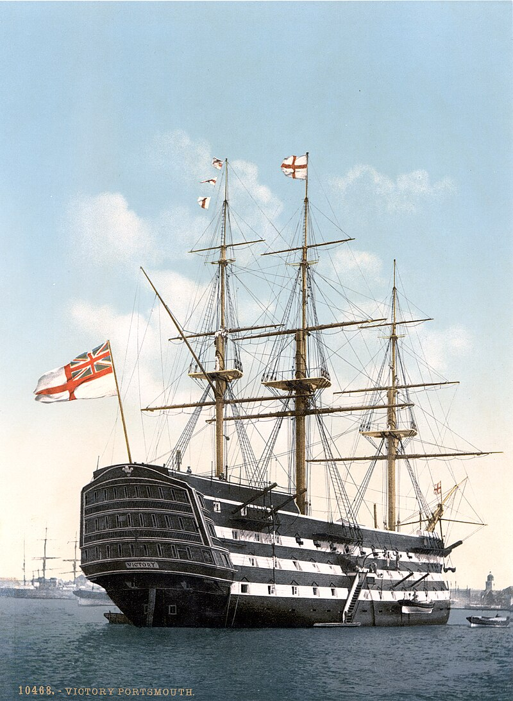

This is my webpage about warships
A warship or combatant ship is a naval ship that is used for naval warfare. Usually they belong to the navy branch of the armed forces of a nation, though they have also been operated by individuals, cooperatives and corporations. As well as being armed, warships are designed to withstand damage and are typically faster and more maneuverable than merchant ships. Unlike a merchant ship, which carries cargo, a warship typically carries only weapons, ammunition and supplies for its crew.